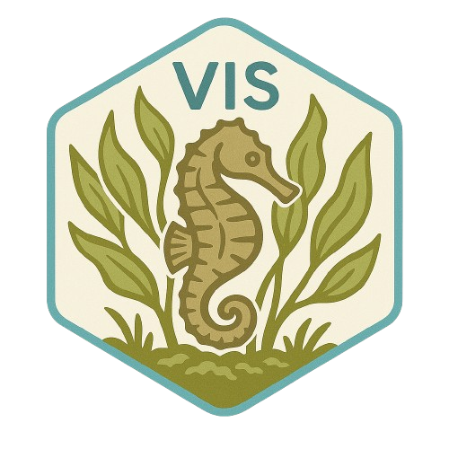

MARINE VIDEO IDENTIFICATION SYSTEM
MarVIS
Marine Video Identification System (MarVIS) uses TensorFlow-based vision and audio models to identify marine life in low-light and high-turbidity conditions, providing robust tagging, recognition, and dataset curation pipelines.
VISION + AUDIO + DATASET CURATION
Inspect marine footage and build labeled dataset records
LOCAL MEDIAANNOTATIONAUDIO FEATURESNATIVE TF MODEL ADAPTER
These browser controls are visualization tools. Native MarVIS performs OpenCV/TensorFlow preprocessing and inference.
Annotations0
| # | Label | Confidence | Frame | Box |
|---|